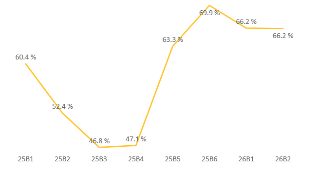
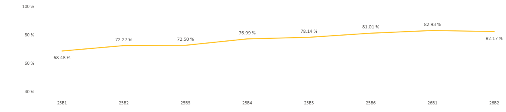
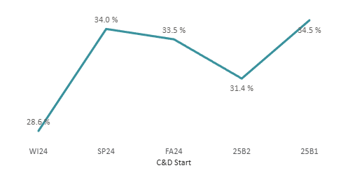

Metric
Autonomy
Percent of students not needing help from the home office.
Autonomy · Satisfaction · Completion
Student Services delivers an intuitive and supportive student journey that enables progression from admission to graduation.

Percent of students not needing help from the home office.

Percent of students indicating satisfaction with BYU-Pathway services and supports.

Percent of certificate and degree students completing their first certificate within eight blocks.